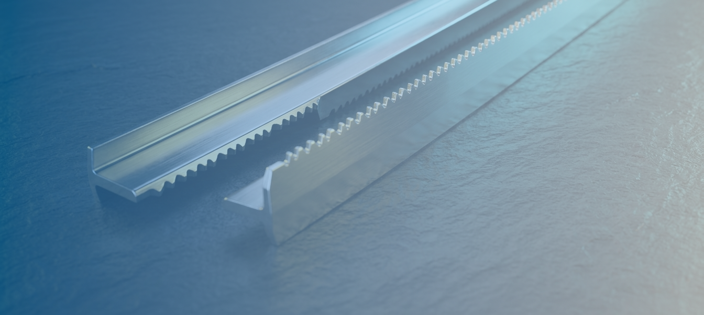
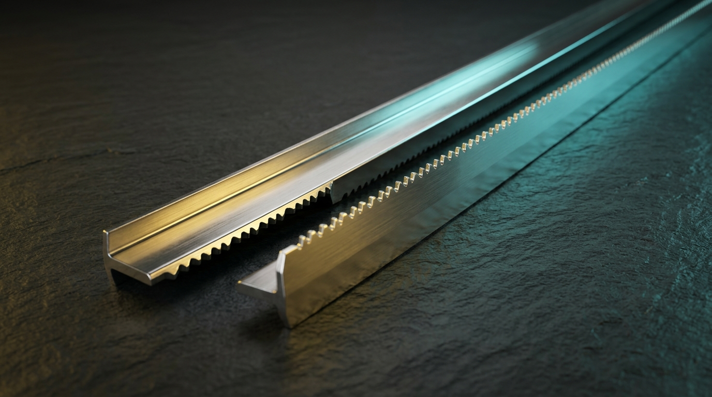

Resultat: CSS Pur (1 sola foto) vs Imatge 2MB

1. Arxiu Original (2.06 MB)
Exemple 1.webp exportat

2. Reproducció CSS Pura (0 KB extra)
Aplicada sobre la foto base en repòs
3. Interacció (Posa el ratolí o clica)
Transició suau de 60fps cap a l'acer pur